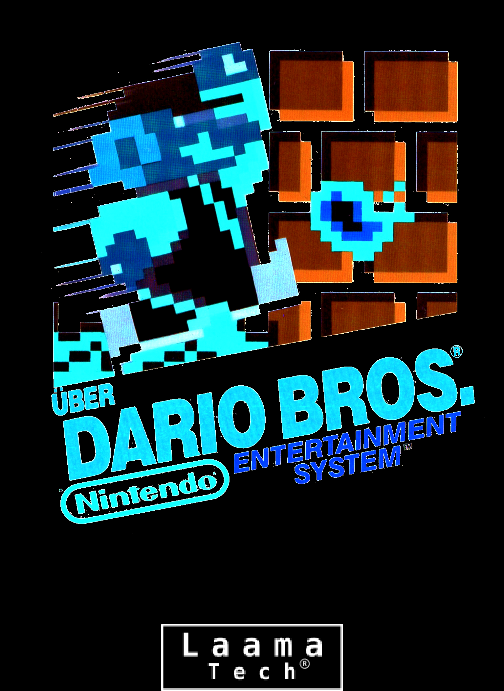
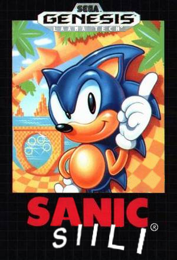
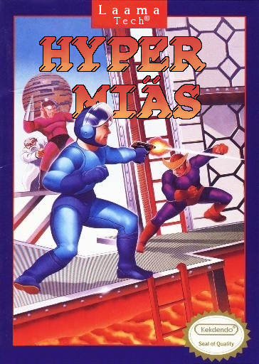

Über Dario Bros.

Yhtiömme neitsytpeli.
Mielenvikainen Browser on kaapannut tarinamme sankarin, Darion,
sisarentyttären. Dario sekä hänen veljensä, Un-Luigi, lähtevät höperölle seikkailulle ympäri
Jäkälän Kansanvaltaista Tasavaltaa pelastaakseen sisarentyttärensä.
Über Dario Bros. saavutti Savossa ja Porissa suurta suosiota, saaden
"Varsinais-Suomen vuoden peli" -palkinnon.
Sanic: S I I L I

Veroparatiisi Mokano on joutunut pahaan velkakierteeseen. Heidän onnekseen
sateenkaareen pää on löydetty, ja sen rikkauksista juorutaan taukoamatta.
Mokanon johto päättääkin lähettää parhaimman velan kerääjänsä Sanicin
keräämään mahdollisimman paljon juuri löydetyn runsaudensarven antimia itselleen.
Hyper Miäs

Vuosi on 7325. Länsi-Suomen teknokraattinen vaalioligarkia on sodassa Itä-Suomen feodaalisen kleptomaanis-teokratian kanssa.
Eräänä päivänä, sotilaskäyttöä varten kehitetyt robotit kääntyvät ohjelmointiansa vastaan, ja
alkavat siivota kummallakin eturintamalla taistelemisen sijaan. Sota näyttää olevan ohi, tai ainakin aselevossa.
Hyper Miäs, Länsi-Suomen teknokraattisen vaalioligarkian valiotaistelija, käsketään soluttautumaan
Itä-Suomen feodaaliseen kleptomaanis-teokratiaan tuhotakseen vastapuolen robotinohjausjärjestelmät.
Pahaa aavistamattaan, Itä-Suomen feodaalinen kleptomaanis-teokratia suunnittelee
samaa omalla soluttautujaässällään, Ryä-äijällä.
Hyper Miäs oli ehdolla parhaasta tarinasta Turun Sanomien kuukausiliitteessä.